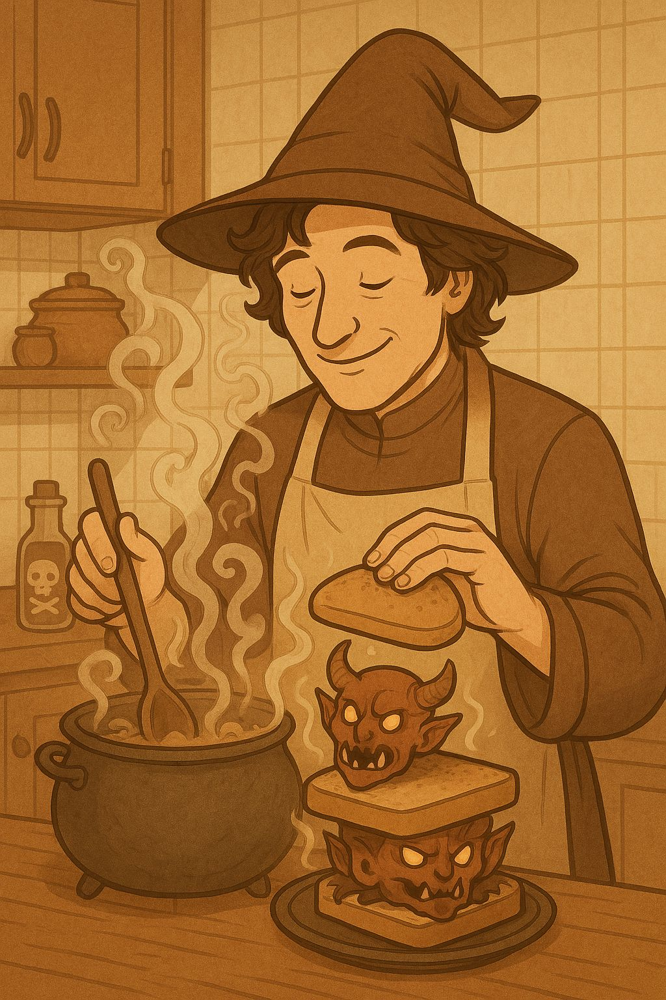

Volver
Sanguche de almas
Sanguche de almas

El sanguche de almas es una antigua receta encontrada en unos gastados pergaminos en Pakistan. Se dice que es escrito por Abdul-Alhazred un extraño personaje de origen arabe.
Los ingredientes para poder realizar esta receta son:
- Dos rebanadas de pan
- Cinco rodajas de tomate
- Romero
- Pepinillos (de Dharma)
- Tomillo
- Un huevo en rodajas
- El colibrí de la casa del Yeye
- Pepino
- Lagrimas de sirena
- Tocino
- Tres almas de demonios
Los pasos para poder realizar esta receta son:
- Primero debes conseguir el colibrí de la casa del Yeye, es un ave muy escurridiza y difícil de atrapar.
- Luego debes conseguir las lagrimas de sirena, para esto debes ir a la playa y esperar a que una sirena se acerque.
- Después debes conseguir las almas de demonios, para esto debes ir al inframundo y hacer un pacto con un demonio.
- Finalmente debes mezclar todos los ingredientes y servir en un plato hondo.
- Disfrutar de tu sanguche de almas!
- Si no te gusta, puedes intentar con un sanguche de pollo.